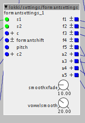

Extremly useful, thx again 
Lokki contributions
Blindsmyth
#24
your mix object is extremly handy. would it be possible for you to make 6, 7 and 8 Versions of it?
lokki
#25
sure, i just uploaded 4, 6, 7 and 8 versions. currently untested but should be fine. let me know if there are any issues.
lokki
#27
settings/formantsettings

greatly facilitates the creation of formant filter systems. check the help patch for more in-depth explanation/usage example. basically it is a preset object with 5 vowels (a e i o u) for 5 different singer ranges (0-4:alto, 5-9:bass, 10-14:countertenor, 15-19:soprano, 20-24:tenor). select two of those vowels (s1 and s2) and you can xfade between them via the +c control.
EDIT: added formantshift, pitch and c2 inputs. see help patch for explanation. basically you can shift all the formants via the formantshift control or shift formants dependent on input frequency, and c2 is a crossfade between the formantshift and the pitch input.
Large set of constants, most economical way to store/recall?
lokki
#28
lokki/octaver.axp
"analog" octaver based on oc2 schematic/function.
this uses the same mechanisms that the oc2 uses to generate an octave down signal from any audio input. it reacts to dynamics and the waveform of the octaves signal is reminicent of the input. the waveform stitching is slightly different then the one on the oc2, mine is based on valve wizards u-boat circuit.
lokki
#29
lokki/sampleratereducer.axp
naive approach at samplerate reduction, only process every n-th sample of the input. lofi ahead and a different take at samplerate reduction with Axoloti.
lokki
#30
lokki/sampleredux.axo
samplerate reduction by skipping n samples of the input. with a mask input to create more slurrish sweeps of the samplerate.
lokki
#31
lokki/octaver/
divider
squarify
stitcher
three objects to create analog style octavers in Axoloti.
these are just the minimum, you will need some factory objects and for live audio inputs you will need some filtering at the inputs.
divider: "automatic" flip flop. divides an input square wave by 2. half frequency...
squarify: turn any input into a square wave (you have to filter out harmonics first from i.e. a guitar)
stitcher: combine or better stitch the input signal based on the octaved down square. alternating normal and inverted signal to get a signal reminiscent of the original but an octave lower.
Blindsmyth
#32
trying to send my zither through you octaver patch (singlecoil pickup so same sound as a guitar technically) so I added env follower, and filters on the input.
I don't get a really stable sound out of it. Any suggestions?
{kind=link}
lokki
#33
yes, a couple of suggestions
first of all don't use the env and vca, this will not work. the stitcher automatically uses the dynamics of your zither.
second i would put the hp first, then the lp (not sure if that makes a difference)
what is the highest note you can play on the zither? is it really 2.96k? i would assume it is quite a bit lower, set the lp to a value slightly below your highest frequency. probably you have to cascade 2 or 3 of those lp filters, since the slope is not steep enough.
let me know if that improves things. i have not yet tested it with a guitar here.
also note, that you may need a gate on the input, since noise from the single coil could trigger the octaver. i don't know if there is a gate in the library though...
the wave input on the stitcher can be feed directly from the input or after the filtering, depends on the sound you are after.
Blindsmyth
#34
Hi thanks your suggestions make it a lot better!
Hower there is still a big delay when I play my lower notes. Also Plucked in my Guitar. Everthing below A is a bit tricky.
{kind=link}
Also would it be possible to just get a clean sinewave for the octave?
lokki
#35
big delay shouldn't come from my objects. i'm a little baffled. can you try and see if the four filters at the input alone give you this delay as well? maybe that's the cause. or the three scopes?
as for pure sine wave, no thats not possible. since the octaver does not know the frequency (it simply divides it by 2 without being aware of the frequency), you cannot simply connect a sine oscillator to it. what analog octavers do: put a lowpass filter behind the octaver to make it sound more like a sine.
lokki
#36
or is there output from the octave, but it only gets stable after some delay? that would mean, that the attack portion of the string still triggers other harmonics, you could try to lower the lowpass frequency some more.
Blindsmyth
#37
ok sounds reasonable.
Yes that's what I meant. This would mean losing some higher notes but I want to use it to make a fake bass anyways.
lokki
#38
it should behave quite exactly like an analog octaver. the analog octaver will also glitch, when you have a to harsh attack, or fret buzz or anything. try turning your tone pot down, using only neck pickup that should further improve tracking. you can also try to pluck with your fingers instead of a pick.
losing high notes is of course not ideal, but i know it is an issue as well with analog octavers, on high notes the sustain gets much shorter before the octave dies out...(indicating that the cutoff of the lowpass before the tracking filter is lower than the highest frequencies)
have you tried to connect the wave inlet on the stitcher directly to the audio input? how does this sound?
thanks for trying this btw.!
Blindsmyth
#39
Ok tried all of this. THe low E string is still problematic. Even with the Filters way back to 120hz when you pluck the low E string it will first see it as the 1st harmonic so the octaver sound = input sound and then drop down.
lokki
#40
ok. i will look into this when i get to my rehearsal room (with the guitar). how do you plug the guitar into the Axoloti? directly or via a preamp of some sort?